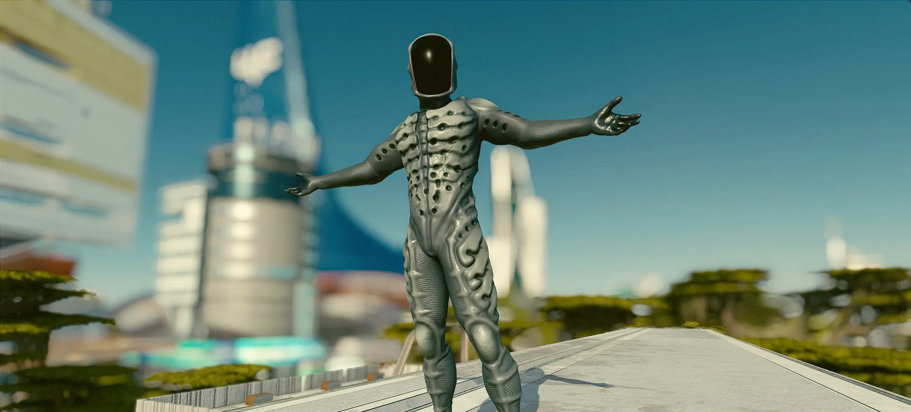

21 OCT 2025
STARFIELD FEATURED CREATIONS - HALLOWEEN EDITION
Halloween is fast approaching! As the spooky season draws near, add some flavor to your playthrough with any of these hand-picked Starfield Creations...